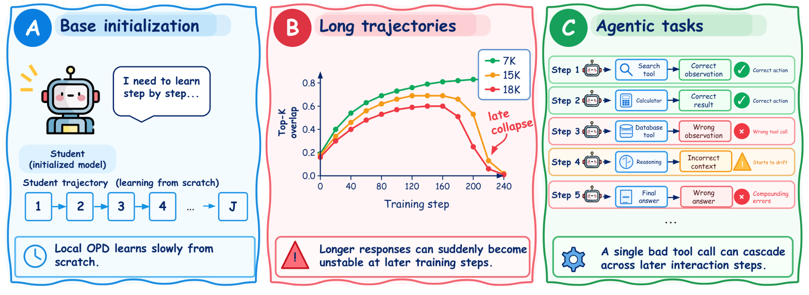
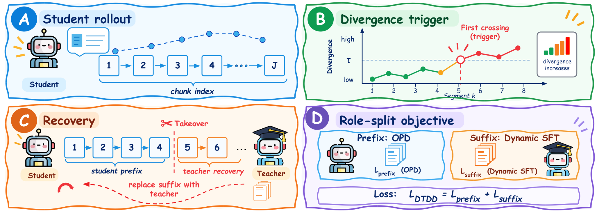
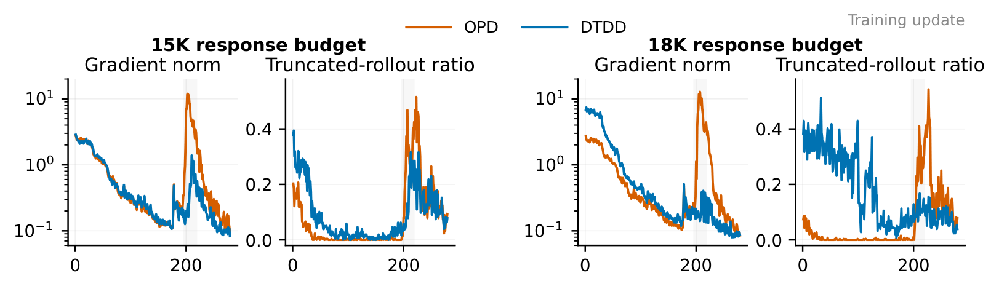
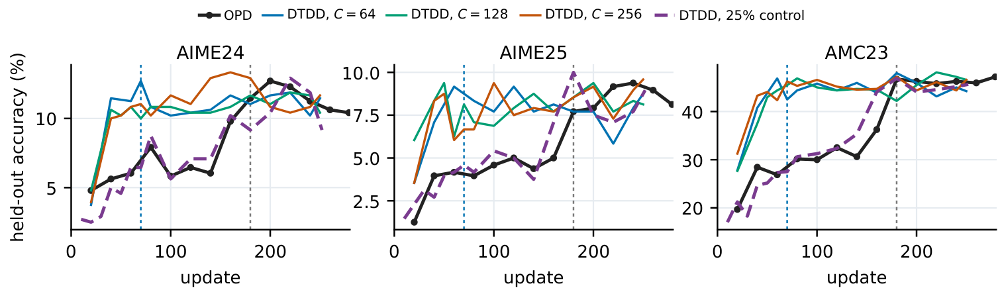
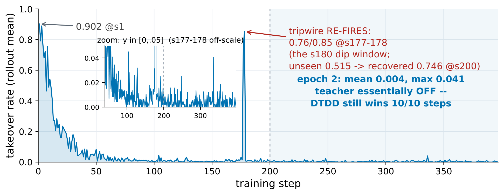
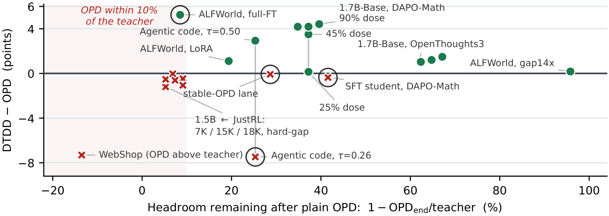

DTDD: Divergence-Triggered Dynamic Distillation for Reliable On-Policy Supervision
 Google
2
Google
2 University of Washington
3Boston University
University of Washington
3Boston University

Abstract
On-policy distillation (OPD) provides dense token-level supervision on student rollouts, but this supervision can become unreliable when the student and teacher diverge, either because of a large initial policy gap or compounding errors in long-horizon reasoning and tool use. We introduce Divergence-Triggered Dynamic Distillation (DTDD), an adaptive OPD framework that routes supervision between standard OPD and teacher-generated recovery using segment-level student–teacher divergence. When divergence triggers an intervention during reasoning, the student prefix continues to receive standard OPD supervision, and the teacher generates a recovery suffix that the student learns through behavior cloning, an online SFT-style loss.
We evaluate DTDD in three regimes: long-horizon reasoning, distillation from a base initialization without offline SFT, and multi-turn agents, and compare alternative trigger designs and teacher-intervention rates. DTDD reduces the post-warm-up peak gradient norm by 8.6×, and from a base initialization reaches 21.3% held-out math accuracy in 2.6× fewer optimizer updates than OPD; both methods finish near 22%. It improves best-observed performance by 4.8 and 4.1 points on ALFWorld and agentic code. Segment-level triggers outperform token-level triggers, and behavior cloning trains teacher-generated recoveries better than the standard OPD objective. Across 23 experimental arms, takeover helps when the teacher substantially outperforms the OPD-trained student, can recover from student-visited states, provides recoveries the student can learn, and intervenes neither too much nor too little.
Method

- A · Student rolloutThe student samples a full response, split into fixed-length segments (128 tokens in our main runs).
- B · Divergence triggerEach segment's mean student–teacher divergence is compared with a threshold τ; the first crossing marks the intervention boundary.
- C · RecoveryDTDD rewinds to the start of that segment and the teacher completes the response from the retained student prefix.
- D · Role-split objectiveThe student prefix keeps standard OPD supervision; the teacher-written suffix is trained with behavior cloning. With no trigger, DTDD is exactly OPD.
In multi-turn agents the same rule runs at action boundaries: the teacher replaces the triggering action and interaction continues from the resulting environment state.
Results
Long-horizon stability
With 15K- and 18K-token response budgets, OPD develops a sharp late gradient spike. DTDD removes it while keeping held-out accuracy within one point of OPD. Clipping the per-token OPD signal to [−1, 1] stabilizes training too, which we report as a control.

Warming up a base student online
Distilling Qwen3-1.7B-Base from Qwen3-4B-Base-GRPO on DAPO-Math-17K, high-dose DTDD reaches the 21.3% reference level near update 70; OPD reaches it near update 180, and both later converge near 22%. The reliable effect is early acceleration, not a higher endpoint.
Against an offline pipeline that spends the same teacher budget on SFT first, DTDD reaches comparable accuracy in one online stage.

Which design choice carries the effect
We cross the trigger (segment-averaged divergence vs a single-token spike) with the teacher-suffix loss (behavior cloning vs the unified KD objective), and reproduce AdaSwitch with its published rule. Token-spike triggers fall back to the OPD baseline; training teacher suffixes with the KD objective is worse than no takeover. AdaSwitch comes closest, while spending 1.7× the teacher tokens per update.
| Trigger / method | Suffix loss | Step 60 | 80 | 100 | 120 | Teacher tokens / update |
|---|---|---|---|---|---|---|
| OPD | — | 12.14 | 14.00 | 13.15 | 14.54 | 0 |
| DTDD (segment) | BC | 20.32 | 21.47 | 21.08 | 20.83 | 0.52M |
| Token spike | KD | 12.47 | 12.14 | 12.81 | 13.51 | 0.40M |
| Token spike | BC | 13.19 | 13.07 | 13.26 | 16.79 | 0.43M |
| Segment | KD | 5.78 | 7.80 | 8.04 | 10.23 | 0.67M |
| AdaSwitch (K = 3) | KD | 18.16 | 19.57 | 18.68 | 19.95 | 0.86M |
| SFT → OPD | — | 20.63 | 22.81 | 22.45 | 22.03 | 95M offline |
Held-out average@16 (%) over AIME 2024, AIME 2025 and AMC 2023. OPD and DTDD rows are two-seed means; other rows are single runs.
Multi-turn agents
On ALFWorld, takeover starts at 90% and falls to near zero as the student improves, then reactivates when discrepancy rises again near update 180. DTDD leads OPD at every matched checkpoint after update 200. In agentic code, a sparse 2.8% teacher-token dose improves all four evaluation splits.

When does takeover help?
Across 23 arms in 13 settings, 19 follow one pattern: gains concentrate where plain OPD leaves more headroom below the teacher. The exceptions are explained by teacher validity (WebShop, where the teacher scores below OPD), student learnability, and intervention dose.

BibTeX
@misc{he2026dtdd,
title = {DTDD: Divergence-Triggered Dynamic Distillation for Reliable On-Policy Supervision},
author = {He, Qijia and Li, Zequn and Luo, Spencer and Chen, Tianle and Narayana, Pradyumna
and Ma, Zixian and Krishna, Ranjay and Nie, Lan and Basu, Sugato},
year = {2026},
note = {Preprint}
}